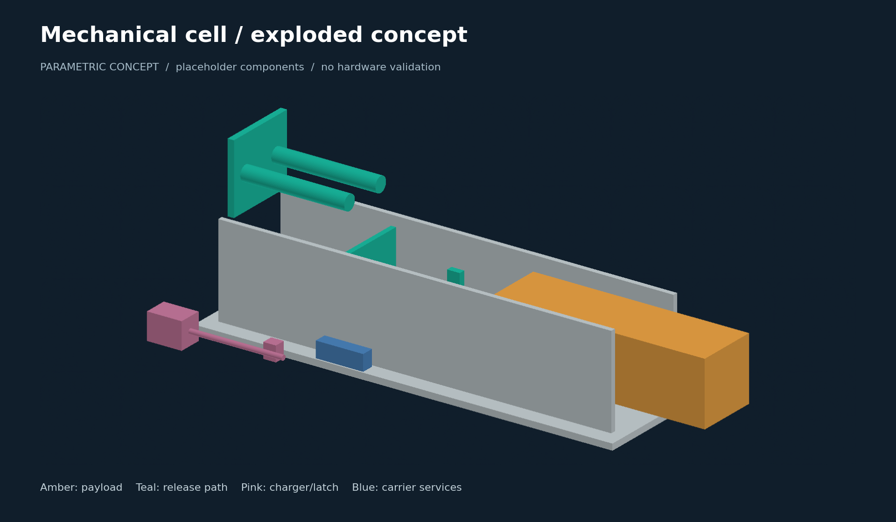
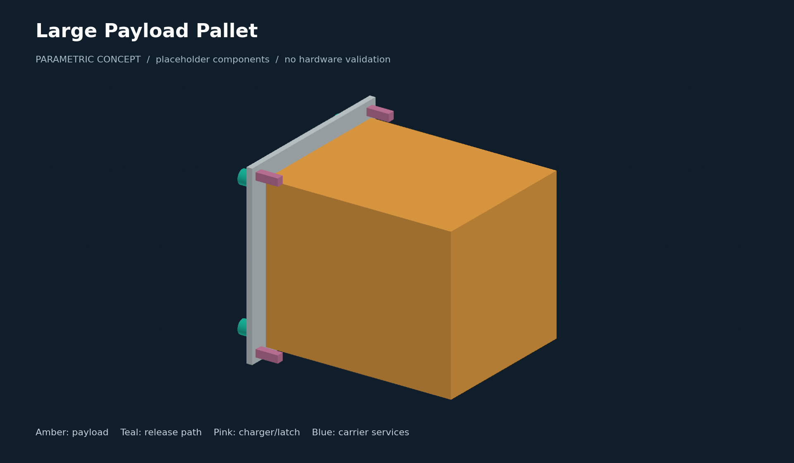
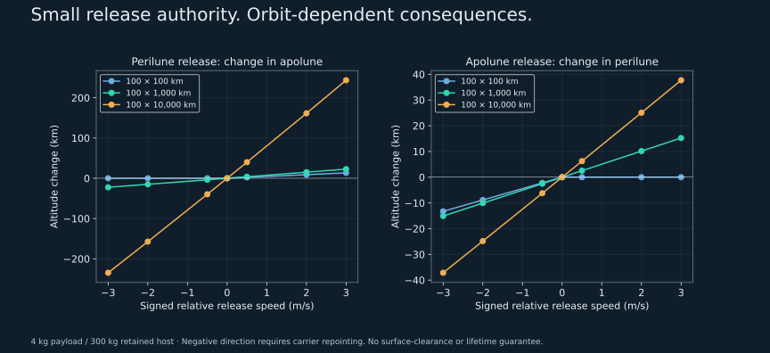
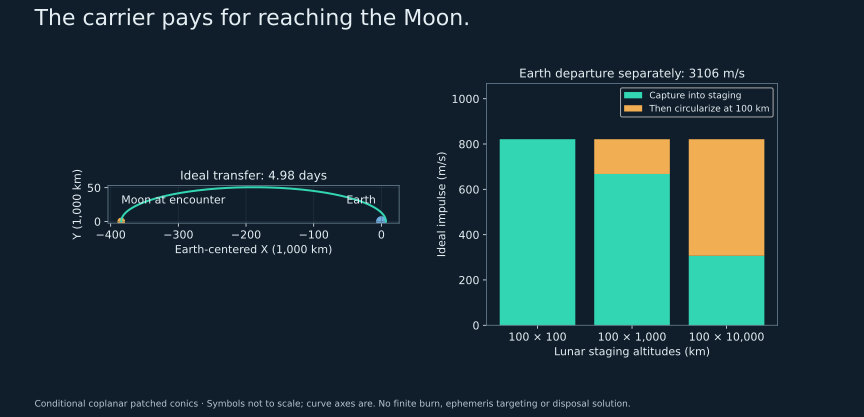
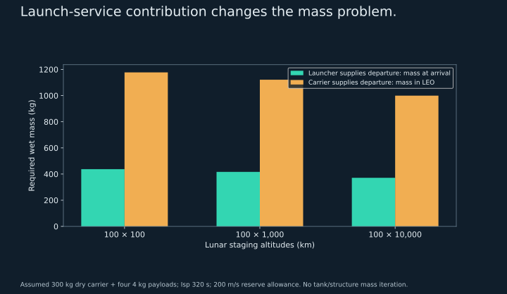
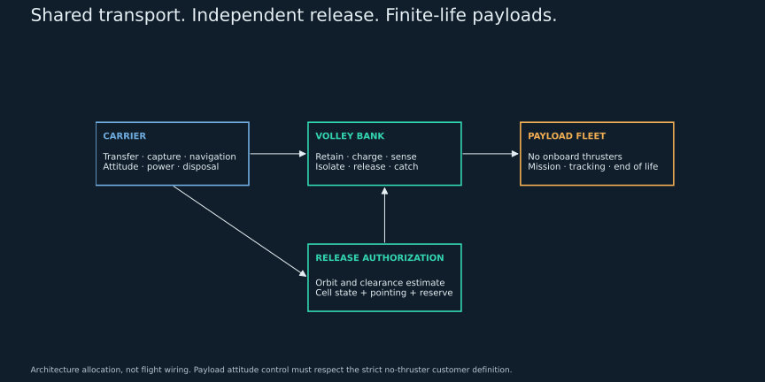
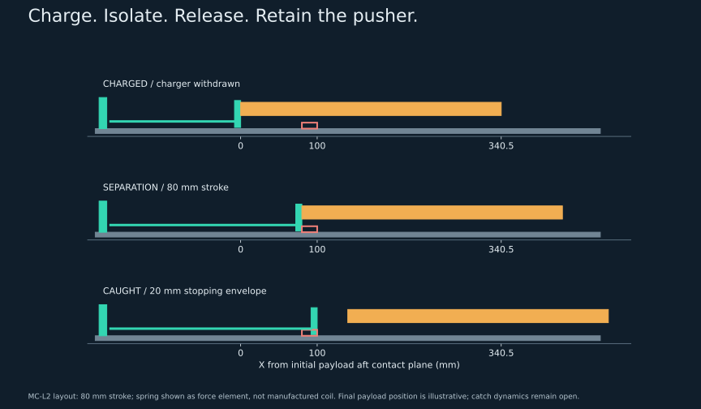

One cell first. A carrier when the mission earns it.
These models make the component boundaries and packaging visible while the native Fusion design is developed. Spring cylinders, motors, latches, tanks, panels and propulsion are envelopes, not selected parts. The carrier's assumed dynamical mass is not derived from these solids.
Drag to rotate; angle slider also works with the keyboard. Amber: payload. Teal: release mechanism. Pink: charger/latch. Blue: carrier services. All geometry uses mm; +X is departure.


Same mechanism. Very different orbital consequences.
The curves below are reconstructed from the saved C0-S2 cases. Each compares a 4 kg payload with a 300 kg retained host. Both receive recoil. Negative release requires carrier repointing.
Two-body osculating geometry only. Overlapping curves are expected at true scale. No harmonic gravity, Earth/Sun perturbations, measured release errors, terrain, coverage or useful-lifetime result.

Capture is a carrier responsibility.
An ideal Earth-transfer ellipse now supplies its own implied lunar arrival speed. The calculation connects departure and capture under declared coplanar assumptions, but does not target an actual encounter epoch.
- Launch service supplies departure, or the carrier pays its mass penalty.
- Capture into a high ellipse costs less initially. Later circularization can consume that saving.
- The carrier needs navigation, pointing, recovery and a separate end-of-life solution.
- The payload must survive and perform its mission without correction burns.
A conventional calibrated deployer remains the baseline. Extra release control must earn its installed mass, volume, cost and host operating burden.
Minimal modification is a mechanical-module reuse goal. It is not a claim that a LEO host or payload becomes lunar-ready unchanged.



Download the concept models.

Keep common
Cell datums, independent retention, charger isolation, sensing, pusher guidance and replaceable cassettes. Start with one cell and a two-cell interface before fixing a bank.
Verify for lunar use
Thermal-vacuum behavior, long dwell, lubrication, radiation-sensitive controls, launch/capture loads, lunar navigation and payload lifetime.
Return from Fusion
Native F3D/F3Z, assembly STEP, component list, parameter ledger, mass/CG/inertia estimates and charged/released/caught configurations. Preserve unknown supplier and host dimensions.